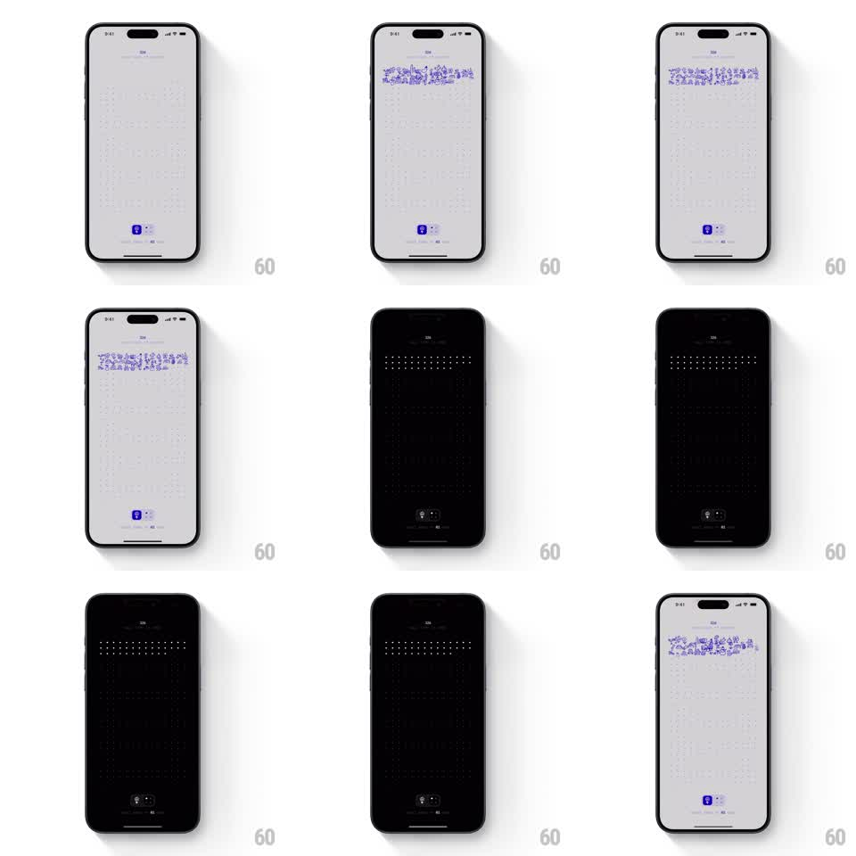

Media
Frame-by-frame

Rebuild this interaction 1:1: One Year's dark mode toggle - a full-screen, unhurried crossfade that carries the dotted-grid calendar, the purple illustration band, and every label from light to dark and back.

Rebuild this interaction 1:1: One Year's dark mode toggle - a full-screen, unhurried crossfade that carries the dotted-grid calendar, the purple illustration band, and every label from light to dark and back. ## Integration Integration: stack-agnostic spec - springs given as stiffness/damping, timed motions as duration + curve; map every value to your framework and animation library of choice. ## Scene A tall screen on light gray: faint dotted grid, a horizontal band of purple hand-drawn doodles across the upper third, sparse typography, and a small theme toggle at the bottom. ## Motion spec Pattern: full-screen theme crossfade, ~600ms. - Tap the toggle: the knob slides to its other detent (spring ~400/22, 200ms). - The background crossfades light gray -> near-black over 450ms, ease-in-out; grid dots dim to ~20% alpha but never vanish. - The illustration band crossfades to its dark-mode palette (same artwork, adjusted inks) over the same 450ms - the doodles never move, only their colors. - Text and icons crossfade to their dark-theme colors simultaneously; nothing slides, pops, or reflows. - Toggling back is the exact reverse with identical timing. ## Calibration - Every element transitions on the same 450ms clock; staggered theming looks like the page is tearing. - Near-black, not pure black - the dotted grid needs contrast headroom. ## Reduced motion Same crossfade shortened to 250ms; the design already avoids motion, so keep it. ## Don't miss - The illustration band must have a real dark palette - simply dimming the light artwork muddies the purples. - The toggle knob is the only thing that moves position; the calm is the point.